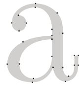
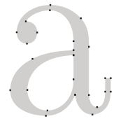

Bezier curves are used in computer graphics to draw shapes, for CSS animation and in many other places.
They are a very simple thing, worth to study once and then feel comfortable in the world of vector graphics and advanced animations.
This article provides a theoretical, but very needed insight into what Bezier curves are, while the next one shows how we can use them for CSS animations.
Please take your time to read and understand the concept, it’ll serve you well.
Control points
A bezier curve is defined by control points.
There may be 2, 3, 4 or more.
For instance, two points curve:
Three points curve:
Four points curve:
If you look closely at these curves, you can immediately notice:
-
Points are not always on curve. That’s perfectly normal, later we’ll see how the curve is built.
-
The curve order equals the number of points minus one. For two points we have a linear curve (that’s a straight line), for three points – quadratic curve (parabolic), for four points – cubic curve.
-
A curve is always inside the convex hull of control points:


Because of that last property, in computer graphics it’s possible to optimize intersection tests. If convex hulls do not intersect, then curves do not either. So checking for the convex hulls intersection first can give a very fast “no intersection” result. Checking the intersection of convex hulls is much easier, because they are rectangles, triangles and so on (see the picture above), much simpler figures than the curve.
The main value of Bezier curves for drawing – by moving the points the curve is changing in intuitively obvious way.
Try to move control points using a mouse in the example below:
As you can notice, the curve stretches along the tangential lines 1 → 2 and 3 → 4.
After some practice it becomes obvious how to place points to get the needed curve. And by connecting several curves we can get practically anything.
Here are some examples:
 
 
De Casteljau’s algorithm
There’s a mathematical formula for Bezier curves, but let’s cover it a bit later, because De Casteljau’s algorithm is identical to the mathematical definition and visually shows how it is constructed.
First let’s see the 3-points example.
Here’s the demo, and the explanation follow.
Control points (1,2 and 3) can be moved by the mouse. Press the “play” button to run it.
De Casteljau’s algorithm of building the 3-point bezier curve:
-
Draw control points. In the demo above they are labeled:
1,2,3. -
Build segments between control points 1 → 2 → 3. In the demo above they are brown.
-
The parameter
tmoves from0to1. In the example above the step0.05is used: the loop goes over0, 0.05, 0.1, 0.15, ... 0.95, 1.For each of these values of
t:-
On each brown segment we take a point located on the distance proportional to
tfrom its beginning. As there are two segments, we have two points.For instance, for
t=0– both points will be at the beginning of segments, and fort=0.25– on the 25% of segment length from the beginning, fort=0.5– 50%(the middle), fort=1– in the end of segments. -
Connect the points. On the picture below the connecting segment is painted blue.
-
For t=0.25 |
For t=0.5 |
|---|---|
 |
 |
-
Now in the blue segment take a point on the distance proportional to the same value of
t. That is, fort=0.25(the left picture) we have a point at the end of the left quarter of the segment, and fort=0.5(the right picture) – in the middle of the segment. On pictures above that point is red. -
As
truns from0to1, every value oftadds a point to the curve. The set of such points forms the Bezier curve. It’s red and parabolic on the pictures above.
That was a process for 3 points. But the same is for 4 points.
The demo for 4 points (points can be moved by a mouse):
The algorithm for 4 points:
- Connect control points by segments: 1 → 2, 2 → 3, 3 → 4. There will be 3 brown segments.
- For each
tin the interval from0to1:- We take points on these segments on the distance proportional to
tfrom the beginning. These points are connected, so that we have two green segments. - On these segments we take points proportional to
t. We get one blue segment. - On the blue segment we take a point proportional to
t. On the example above it’s red.
- We take points on these segments on the distance proportional to
- These points together form the curve.
The algorithm is recursive and can be generalized for any number of control points.
Given N of control points:
- We connect them to get initially N-1 segments.
- Then for each
tfrom0to1, we take a point on each segment on the distance proportional totand connect them. There will be N-2 segments. - Repeat step 2 until there is only one point.
These points make the curve.
Run and pause examples to clearly see the segments and how the curve is built.
A curve that looks like y=1/t:
Zig-zag control points also work fine:
Making a loop is possible:
A non-smooth Bezier curve (yeah, that’s possible too):
If there’s something unclear in the algorithm description, please look at the live examples above to see how the curve is built.
As the algorithm is recursive, we can build Bezier curves of any order, that is: using 5, 6 or more control points. But in practice many points are less useful. Usually we take 2-3 points, and for complex lines glue several curves together. That’s simpler to develop and calculate.
To specify a Bezier curve, control points are used. As we can see, they are not on the curve, except the first and the last ones.
Sometimes we have another task: to draw a curve through several points, so that all of them are on a single smooth curve. That task is called interpolation, and here we don’t cover it.
There are mathematical formulas for such curves, for instance Lagrange polynomial. In computer graphics spline interpolation is often used to build smooth curves that connect many points.
Maths
A Bezier curve can be described using a mathematical formula.
As we saw – there’s actually no need to know it, most people just draw the curve by moving points with a mouse. But if you’re into maths – here it is.
Given the coordinates of control points Pi: the first control point has coordinates P1 = (x1, y1), the second: P2 = (x2, y2), and so on, the curve coordinates are described by the equation that depends on the parameter t from the segment [0,1].
-
The formula for a 2-points curve:
P = (1-t)P1 + tP2 -
For 3 control points:
P = (1−t)2P1 + 2(1−t)tP2 + t2P3 -
For 4 control points:
P = (1−t)3P1 + 3(1−t)2tP2 +3(1−t)t2P3 + t3P4
These are vector equations. In other words, we can put x and y instead of P to get corresponding coordinates.
For instance, the 3-point curve is formed by points (x,y) calculated as:
x = (1−t)2x1 + 2(1−t)tx2 + t2x3y = (1−t)2y1 + 2(1−t)ty2 + t2y3
Instead of x1, y1, x2, y2, x3, y3 we should put coordinates of 3 control points, and then as t moves from 0 to 1, for each value of t we’ll have (x,y) of the curve.
For instance, if control points are (0,0), (0.5, 1) and (1, 0), the equations become:
x = (1−t)2 * 0 + 2(1−t)t * 0.5 + t2 * 1 = (1-t)t + t2 = ty = (1−t)2 * 0 + 2(1−t)t * 1 + t2 * 0 = 2(1-t)t = –2t2 + 2t
Now as t runs from 0 to 1, the set of values (x,y) for each t forms the curve for such control points.
Summary
Bezier curves are defined by their control points.
We saw two definitions of Bezier curves:
- Using a drawing process: De Casteljau’s algorithm.
- Using a mathematical formulas.
Good properties of Bezier curves:
- We can draw smooth lines with a mouse by moving control points.
- Complex shapes can be made of several Bezier curves.
Usage:
- In computer graphics, modeling, vector graphic editors. Fonts are described by Bezier curves.
- In web development – for graphics on Canvas and in the SVG format. By the way, “live” examples above are written in SVG. They are actually a single SVG document that is given different points as parameters. You can open it in a separate window and see the source: demo.svg.
- In CSS animation to describe the path and speed of animation.
{kind=link}
Comments
<code>tag, for several lines – wrap them in<pre>tag, for more than 10 lines – use a sandbox (plnkr, jsbin, codepen…)